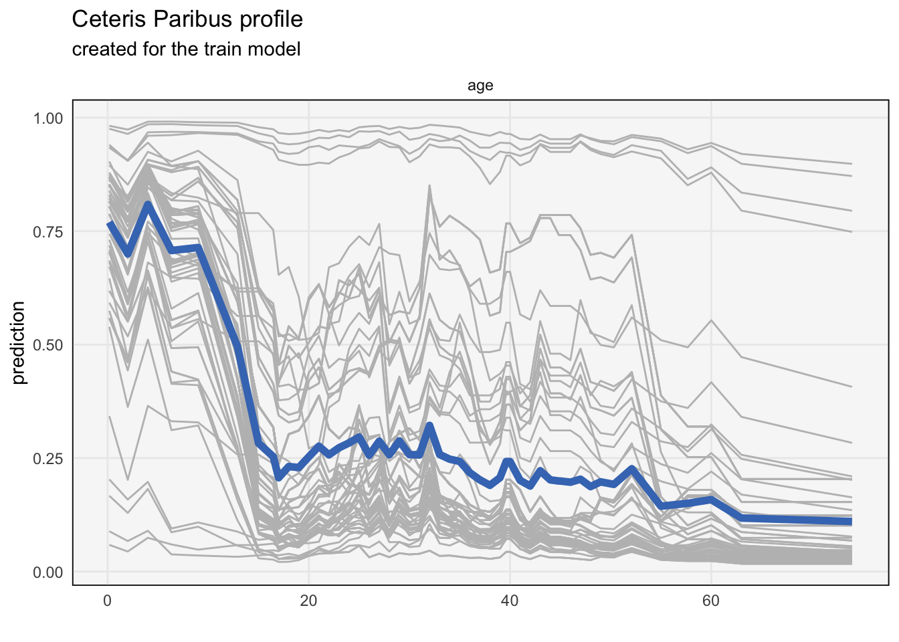
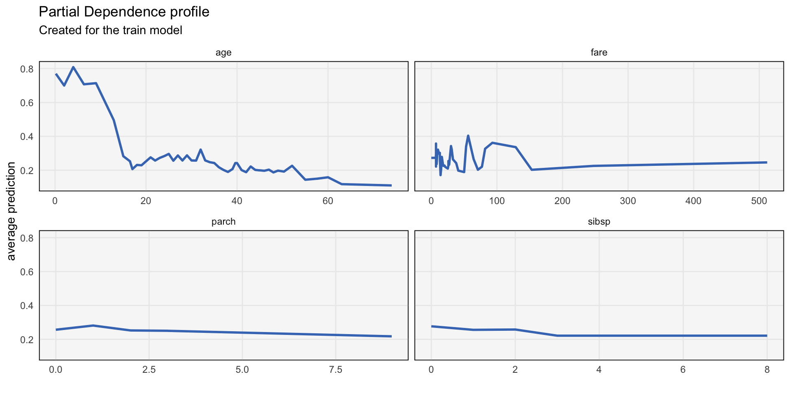

library(caret)
library(tidyverse)
library(DALEX)
theme479 <- theme_minimal() +
theme(
panel.grid.minor = element_blank(),
panel.background = element_rect(fill = "#f7f7f7"),
panel.border = element_rect(fill = NA, color = "#0c0c0c", size = 0.6),
legend.position = "bottom"
)
theme_set(theme479)Partial Dependence Profiles I
An introduction to partial dependence profiles.
As more complex models become more common in practice, visualization has emerged as a key way for (a) summarizing their essential structure and (b) motivating further modeling refinements.
In modern machine learning, it’s common to use a function \(f\) to approximate the relationship between a \(D\)-dimensional input \(\mathbf{x}\) and a univariate response \(y\). We are given a sample of \(n\) pairs \(\left(\mathbf{x}_{i}, y_{i}\right)\) with which to learn this relationship, and we hope that the function we learn will generalize to future observations.
Some further notation: We will write \(x_{j}\) for the \(j^{th}\) coordinate of \(\mathbf{x}\). We will write \(\mathbf{x}^{j\vert = z}\) to denote the observation \(\mathbf{x}\) with the \(j^{th}\) coordinate set to \(z\).

Linear models are simple enough that they don’t require any follow-up visual inspection. Since they assume \(f\left(\mathbf{x}\right) = \hat{\beta}^{T}\mathbf{x}\), they are completely described by the vector of coefficients \(\hat{\beta}\). We can exactly describe what happens to \(f\) when we increase \(x_{j}\) by one unit: we just increase the prediction by \(\hat{\beta}_{j}\).
More complex models — think random forests or neural networks — don’t have this property. While these models often have superior performance, it’s hard to say how changes in particular input features will affect the prediction.
Partial dependence plots try to address this problem. They provide a description for how changing the \(j^{th}\) input feature affects the predictions made by complex models.
To motivate the definition, consider the toy example below. The surface is the fitted function \(f\left(\mathbf{x}\right)\), mapping a two dimensional input \(\mathbf{x}\) to a real-valued response. How would you summarize the relationship between \(x_{1}\) and \(y\)? The main problem is that the shape of the relationship depends on which value of \(x_{2}\) we start at.

One idea is to consider the values of \(x_{2}\) that were observed in our dataset. Then, we can evaluate our model over a range of values \(x_{1}\) after fixing those values of \(x_{2}\). These curves are called Ceteris Paribus profiles1.
The same principle holds in higher dimensions. We can fix \(D - 1\) coordinates of an observation and then evaluate what happens to a sample’s predictions when we vary coordinate \(j\). Mathematically, this is expressed by \(h_{x}^{f, j}\left(z\right) := f\left(\mathbf{x}^{j\vert= z}\right)\).

- For example, let’s consider how CP can be used to understand a model fitted to the Titanic dataset. This is a dataset that was used to understand what characteristics survivors of the Titanic disaster had in common. It’s not obvious in advance which characteristics of passengers made them more likely to survive, so a model is fitted to predict survival.
data(titanic)
titanic <- select(titanic, -country) %>%
na.omit()
x <- select(titanic, -survived)
hyper <- data.frame(n.trees = 100, interaction.depth = 8, shrinkage = 0.1, n.minobsinnode = 10)
fit <- train(x = x, y = titanic$survived, method = "gbm", tuneGrid = hyper, verbose = F)- Next, we can compute the CP profiles. We are showing the relationship between age and survival, though any subset of variables could be requested. The bold curve is a Partial Dependence (PD) profile, which we will discuss below. Each of the other curves corresponds to a passenger, though only a subsample is shown. The curves are obtained by fixing all the characteristics of the passanger except for age, and then seeing what happens to the prediction when the age variable is increased or decreased.
explanation <- explain(model = fit, data = x, y = titanic$survived)Preparation of a new explainer is initiated
-> model label : train ( default )
-> data : 2179 rows 7 cols
-> target variable : 2179 values
-> predict function : yhat.train will be used ( default )
-> predicted values : No value for predict function target column. ( default )
-> model_info : package caret , ver. 7.0.1 , task classification ( default )
-> model_info : Model info detected classification task but 'y' is a factor . ( WARNING )
-> model_info : By deafult classification tasks supports only numercical 'y' parameter.
-> model_info : Consider changing to numerical vector with 0 and 1 values.
-> model_info : Otherwise I will not be able to calculate residuals or loss function.
-> predicted values : numerical, min = 0.01720232 , mean = 0.3269678 , max = 0.9896542
-> residual function : difference between y and yhat ( default ) -> residuals : numerical, min = NA , mean = NA , max = NA
A new explainer has been created! profile <- model_profile(explainer = explanation)
plot(profile, geom = "profiles", variables = "age") +
theme479
It seems that children had the highest probability2 of survival. The relationship is far from linear, with those between 40 and 60 all having about the same probabilities. Notice that the profiles are vertically offset from one passenger to another. This is because, aside from age, each passenger had characteristics that made them more or less likely to survive.
We used the DALEX package to produce these curves. The
explainfunction takes the fitted model and original dataset as input. It returns an object with many kinds of model summaries. To extract the CP profiles from these summaries, we usemodel_profile. The output of this function has been designed so that callingplotwithgeom = "profiles"will show the CP profiles.The PD profile is computed by averaging across all the CP profiles. It is a more concise alternative to CP profiles, showing one curve per features, rather than one curve per sample.
plot(profile, geom = "aggregates") +
theme479
- Not only are the PD plots simpler to read than the full collection of CP profiles — by performing this aggregation step, subtle patterns may become more salient, for the same reason that an average carries more information than any subset of observations.